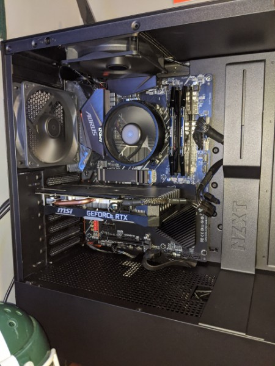

Who is Jared Surato?
By Jared Surato
I am a 4th yearcomputer science student at MSU. I currently work for a small company on campus called ICER (Institute for Cyber-Enabled Research). I have a twin brother who is also an MSU student studying Civil Engineering. My fiance and I live with two cats, Joe and Penny. I enjoy playing video games in my free time as well as the occassional DIY project. If I could live anywhere in the world I would want to live in New Zealand because that is where my favorite movies were filmed, The Lord of the Rings Trilogy. If I could only eat one thing for the rest of my life it would be pizza because you can pretty much put anything on pizza.

I mainly play video games on my computer that I built. This is the second computer that I have built. It is pretty powerful and allows me to play most games without having to worry about performance.
The games that I play most are:
- Battlefield 4
- Escape From Tarkov
- Arma 3
- Call of Duty Black Ops Cold War